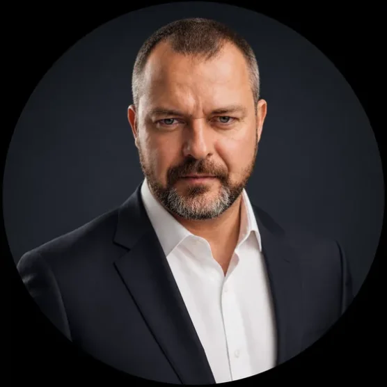
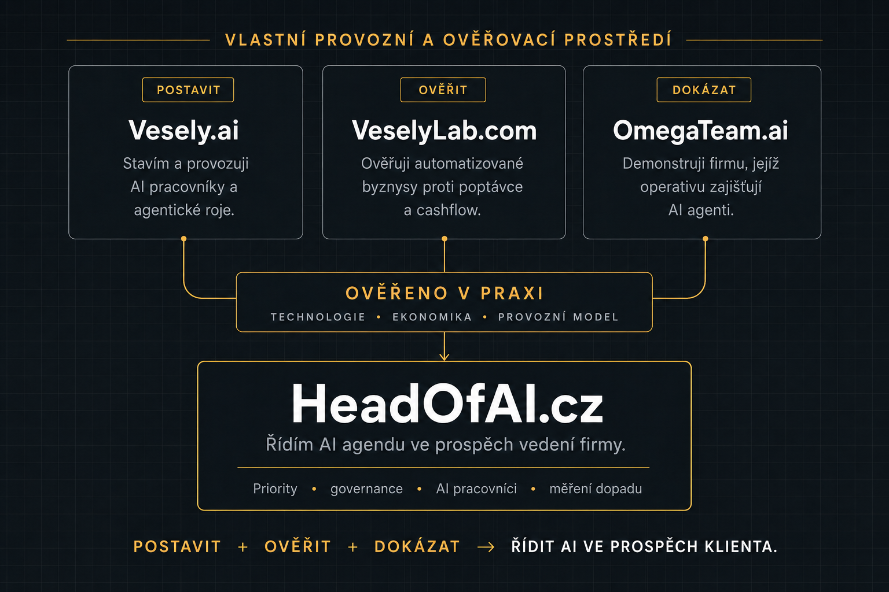

AI bez vlastníka
Vzniká po odděleních, ale nikdo ji neřídí jako firemní schopnost.
→ řeší krok 01
Priority do 30 dnů
Jasné pořadí, kam nasadit AI jako první.
První pilot do 90 dnů
Aspoň 3 AI pracovníci v měřeném provozu.
Jasný vlastník AI agendy
Jedna odpovědná role na straně vedení.
Board reporting a ROI
Dopad v tržbách, nákladech nebo riziku.
Nástroje se množí, experimenty přibývají — ale nikdo neřídí AI jako firemní schopnost s vlastníkem, pravidly a měřeným dopadem. Tady začíná moje role.
Vzniká po odděleních, ale nikdo ji neřídí jako firemní schopnost.
→ řeší krok 01
Možnosti AI rostou rychleji, než se v nich firmy dokážou zorientovat.
→ řeší krok 02
Data, odpovědnost a lidská kontrola zůstávají nejasné. Povinnost AI gramotnosti platí už od února 2025.
→ řeší krok 03
Měří se počet nástrojů a promptů — ne tržby, náklad a uvolněná kapacita.
→ řeší krok 04

Fractional Head of AI
Pomáhám vedení firem převzít kontrolu nad AI: určit priority, nastavit governance, nasadit první AI pracovníky a měřit jejich skutečný dopad.
Nejsem prodejce nástrojů ani teoretik, který AI zná jen z prezentací. AI systémy sám stavím, financuji a provozuji. Na platformě Vesely.ai vytvářím a nasazuji AI pracovníky do produkce, ve venture studiu VeselyLab.com ověřuji automatizované byznysové modely na reálném trhu a zákaznickou akvizici pro OmegaTeam.ai zajišťuje tým autonomních AI agentů pod mým dohledem.

Tato tři prostředí tvoří mou provozní laboratoř. Ověřuji v ní technologii, ekonomiku i provozní model dřív, než něco doporučím klientovi. Co skutečně funguje, se nepozná v zasedací místnosti, ale v reálném provozu. Vaši AI agendu proto nestavím na hype, ale na přístupech, které sám používám a financuji vlastním kapitálem.
Zastupuji zájem vedení vaší firmy, ne dodavatele. Každá iniciativa musí prokázat návratnost, snížení rizika nebo jasný strategický přínos. Když čísla nevycházejí, doporučím projekt odložit nebo zastavit. Výsledkem jsou jasné priority, odpovědnost, měřitelné výstupy a board report místo neurčitých slibů.
Head of AI se stává klíčovou rolí pro řízení technologické změny — a někdo za tuto oblast ve vaší firmě ponese odpovědnost. Na headofai.cz pomáhám firmám tuto roli obsadit včas, dřív než jejich AI agendu začnou fakticky řídit dodavatelé, jednotliví zaměstnanci a nahodile zaváděné nástroje.
01Business na prvním místě. AI až na druhém.
02Důkazy, ne hype.
03Malé piloty. Rychlá zpětná vazba.
04Stavím jen to, co vytváří měřitelnou hodnotu.
05Každý AI systém má vlastníka.
06Jednoduché architektury přežijí déle.
Jedna odpovědná role na straně vedení s mandátem rozhodovat.
Mapa připravenosti s odhadem ročního dopadu v Kč — místo desítek experimentů.
Registr, pravidla, odpovědnosti a zdokumentované AI školení dle čl. 4 AI Act.
Aspoň 3 prioritní agenti běží nad vašimi systémy s měřeným dopadem.
Přehled dosaženého dopadu proti cíli a doporučení pro další období.
Jak se k výsledkům dostaneme. Devadesátidenní sprint v pěti krocích — od zmapování reality po předání řízení zpět vaší firmě. Rozklikněte krok pro detail.
Posouzení připravenosti a priorit (kroky 01–02) vychází z frameworku CIPHER (Armanios & Tucci, 2025) — open-access paper ↗.
Do realizace jdeme jen tehdy, pokud očekávaný roční dopad výrazně převyšuje investici. Když čísla nevycházejí, doporučím projekt zastavit.
Vstup
0 CZK
30 minut, rozhodovací call. Jasné go/no-go a jmenovaný vlastník.
90denní sprint · fixní cena
750 000 CZK / 90 dní bez DPH
Cíl návratnosti: už 3 z nasazených AI pracovníků mají vrátit celou cenu sprintu — a pracují dál ve váš prospěch.
Kroky 2–4: diagnostika, governance a nasazení AI pracovníků.
Fakturace ve třech měsíčních platbách po 250 000 CZK bez DPH, vždy před zahájením fáze. Externí licence a služby třetích stran nejsou zahrnuty.
Váš maximální risk: 250 000 Kč
Po každých 30 dnech rozhodujete vy — bez vašeho go se další fáze nefakturuje ani nerealizuje. Za první platbu máte vždy kompletní decision pack: mapu AI aktivit, priority s odhadem dopadu v Kč a doporučení pokračovat/zastavit.
Volitelné · po sprintu
od 170 000 CZK / měsíc
Cca polovina plně zatíženého nákladu interního Head of AI. Bez náboru. Výpověď měsíc předem.
Každý měsíc dostáváte:
+Board report — dopad portfolia proti cíli, rizika, priority
+Řízení pipeline nových AI příležitostí
+Vendor management bez provizí
+Adopci a proškolení týmu
+Průběžný soulad s EU AI Act
Končí předáním internímu vlastníkovi, kterému odevzdám fungující systém — ne závislostí na mně.
Fakturováno měsíčně předem.
Během 30 minut zjistíme, jestli vaše firma potřebuje prvního AI pracovníka, 90denní sprint — nebo nejdřív nastavit odpovědnost.